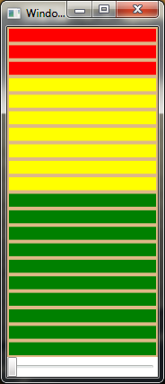

Design one VU meter control in WPF to show the sound VU value dynamically.
.Net Framework 3.5 above, and should build it with Visual Studio 2010. Bu tyou could copy the code to VS 2008 project.
Description
Use a WPF UserControl which bind itsself collection to generate the VU Meter cells. By DataTemplate and with trigger to generate the different color for these cells.

Declare one Value DP in this control, and in its callback method to change the cell visiblity property.
public static readonly DependencyProperty ValueProperty =
DependencyProperty.Register("Value", typeof(int), typeof(VUMeterControl), new UIPropertyMetadata(0,
(sender, e) =>
{
VUMeterControl control = (VUMeterControl)sender;
int value = (int)e.NewValue;
for (int i = TOTAL_COUNT - 1; i >= 0; i--)
{
FrameworkElement element = (FrameworkElement)control.PART_ItemsPresenter.ItemContainerGenerator.ContainerFromIndex(i);
if (TOTAL_COUNT - i > value / (control.MaxValue / TOTAL_COUNT))
element.Visibility = Visibility.Hidden;
else
element.Visibility = Visibility.Visible;
}
})
);
public static readonly DependencyProperty ValueProperty = DependencyProperty.Register("Value", typeof(int), typeof(VUMeterControl), new UIPropertyMetadata(0, (sender, e) => { VUMeterControl control = (VUMeterControl)sender; int value = (int)e.NewValue; for (int i = TOTAL_COUNT - 1; i >= 0; i--) { FrameworkElement element = (FrameworkElement)control.PART_ItemsPresenter.ItemContainerGenerator.ContainerFromIndex(i); if (TOTAL_COUNT - i > value / (control.MaxValue / TOTAL_COUNT)) element.Visibility = Visibility.Hidden; else element.Visibility = Visibility.Visible; } }) );
Then we could use this control by control its Value property.
<Window x:Class="DEMO.Window1"
xmlns="http://schemas.microsoft.com/winfx/2006/xaml/presentation"
xmlns:x="http://schemas.microsoft.com/winfx/2006/xaml"
xmlns:control="clr-namespace:VUMeterControlLibrary;assembly=VUMeterControlLibrary"
Title="Window1" Height="554" Width="296"
xmlns:l="clr-namespace:DEMO">
<StackPanel>
<control:VUMeterControl x:Name="vuMeterControl"/>
<Slider Value="{Binding ElementName=vuMeterControl, Path=Value}" Maximum="100"/>
</StackPanel>
</Window>
<Window x:Class="DEMO.Window1" xmlns="http://schemas.microsoft.com/winfx/2006/xaml/presentation" xmlns:x="http://schemas.microsoft.com/winfx/2006/xaml" xmlns:control="clr-namespace:VUMeterControlLibrary;assembly=VUMeterControlLibrary" Title="Window1" Height="554" Width="296" xmlns:l="clr-namespace:DEMO"> <StackPanel> <control:VUMeterControl x:Name="vuMeterControl"/> <Slider Value="{Binding ElementName=vuMeterControl, Path=Value}" Maximum="100"/> </StackPanel> </Window>
More Information
References:
----------------------
[2011.9.8: Update the control] 1. Replaced hardwired block count with a BlockCount dependancy property. 2. Correctly calculate the block height based on control height and block count.